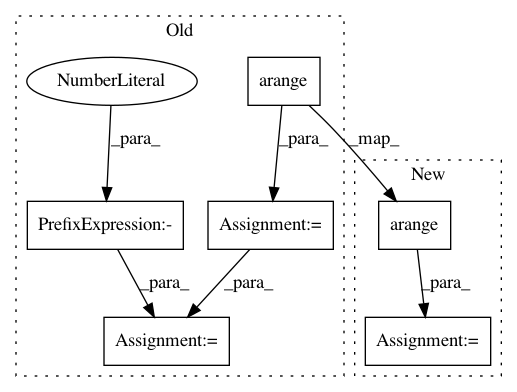

8a6ecfdb1759ad2f67492a983ec5f90b5c5dd3ae,brainiak/reprsimil/brsa.py,GBRSA,_set_SNR_grids,#GBRSA#,4087
Before Change
SNR_weights[0] = SNR_weights[0] / 2.0
SNR_weights[-1] = SNR_weights[-1] / 2.0
elif self.SNR_prior == "lognorm":
log_SNR_grids = ((np.arange(self.SNR_bins)
- (self.SNR_bins - 1) / 2)) \
/ self.SNR_bins * self.logS_range * 6
SNR_grids = np.exp(log_SNR_grids)
log_SNR_grids_upper = log_SNR_grids + self.logS_range * 3 \
/ self.SNR_bins
SNR_weights = np.empty(self.SNR_bins)
SNR_weights[1:-1] = np.diff(
scipy.stats.norm.cdf(log_SNR_grids_upper[:-1],
scale=self.logS_range))
SNR_weights[0] = scipy.stats.norm.cdf(log_SNR_grids_upper[0],
scale=self.logS_range)
SNR_weights[-1] = 1 - scipy.stats.norm.cdf(log_SNR_grids_upper[-2],
scale=self.logS_range)
SNR_grids[0] = 0
else: // SNR_prior == "exp"
SNR_grids = self._bin_exp(self.SNR_bins)
SNR_weights = np.ones(self.SNR_bins) / self.SNR_bins
After Change
// bounds contain the boundaries which equally separate
// the probability mass of the distribution
SNR_grids = np.zeros(self.SNR_bins)
for i in np.arange(self.SNR_bins):
SNR_grids[i] = dist.expect(
lambda x: x, args=(self.logS_range,),
lb=bounds[i], ub=bounds[i + 1]) * self.SNR_bins
// Center of mass of each segment between consecutive
// bounds are set as the grids for SNR.
SNR_weights = np.ones(self.SNR_bins) / self.SNR_bins
else: // SNR_prior == "exp"
SNR_grids = self._bin_exp(self.SNR_bins)
SNR_weights = np.ones(self.SNR_bins) / self.SNR_bins
In pattern: SUPERPATTERN
Frequency: 3
Non-data size: 6
Instances
Project Name: brainiak/brainiak
Commit Name: 8a6ecfdb1759ad2f67492a983ec5f90b5c5dd3ae
Time: 2017-08-30
Author: lcnature@users.noreply.github.com
File Name: brainiak/reprsimil/brsa.py
Class Name: GBRSA
Method Name: _set_SNR_grids
Project Name: tgsmith61591/pmdarima
Commit Name: bc4a5f5d29bb5a74d9cb254ff4dfed916676c8aa
Time: 2019-11-01
Author: tgsmith61591@gmail.com
File Name: pmdarima/model_selection/_split.py
Class Name: RollingForecastCV
Method Name: _iter_train_test_indices
Project Name: grrrr/nsgt
Commit Name: d6df6857ff7493bfb4818241cf5edb30fe751e97
Time: 2011-03-30
Author: gr@grrrr.org
File Name: src/nsgtf.py
Class Name:
Method Name: nsgtf